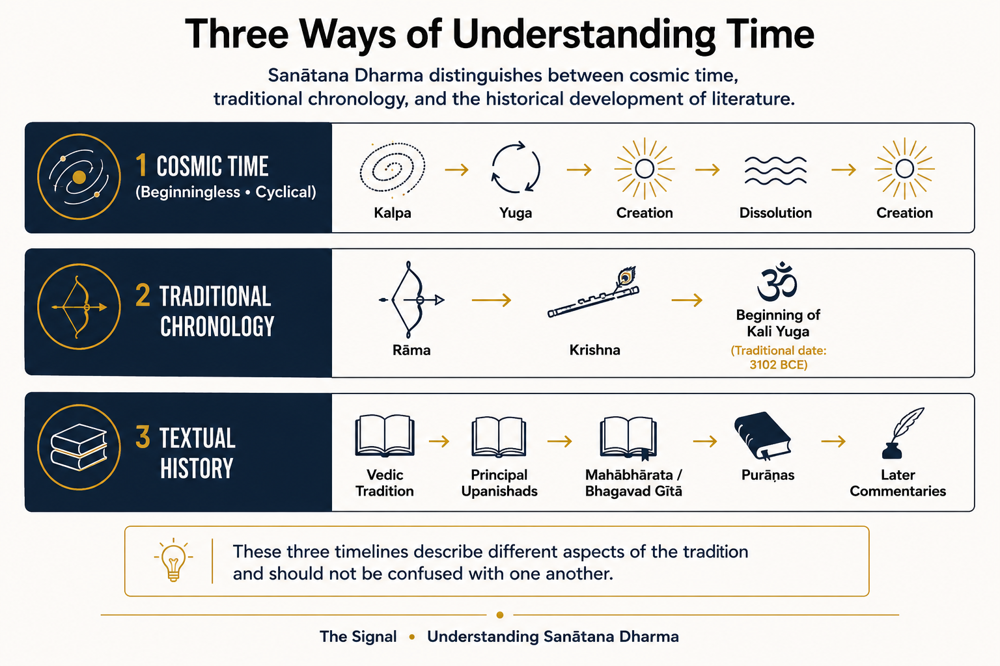
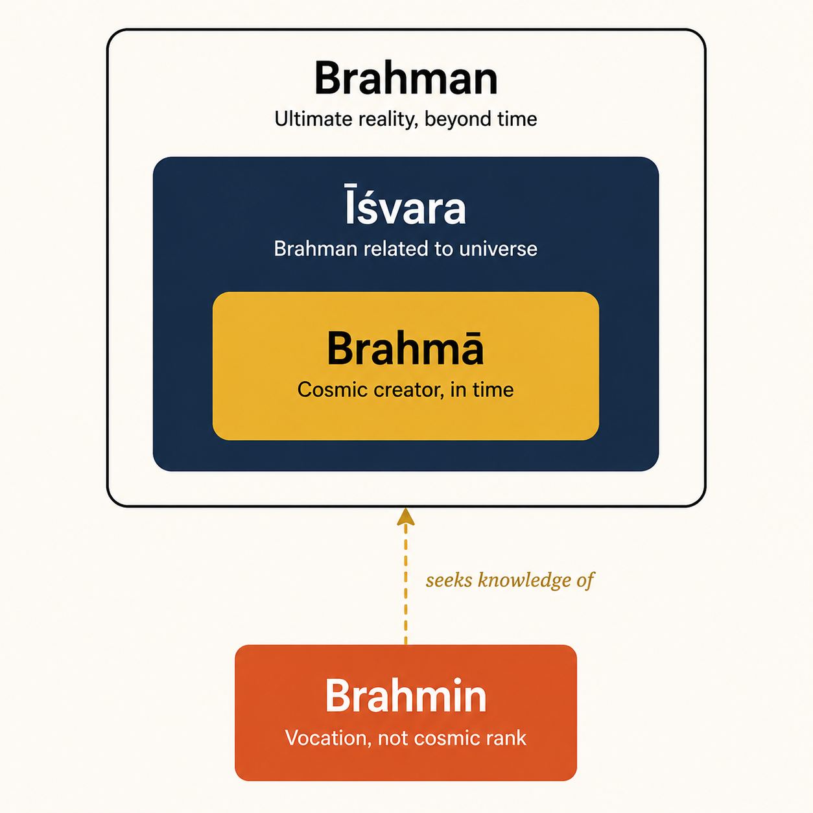
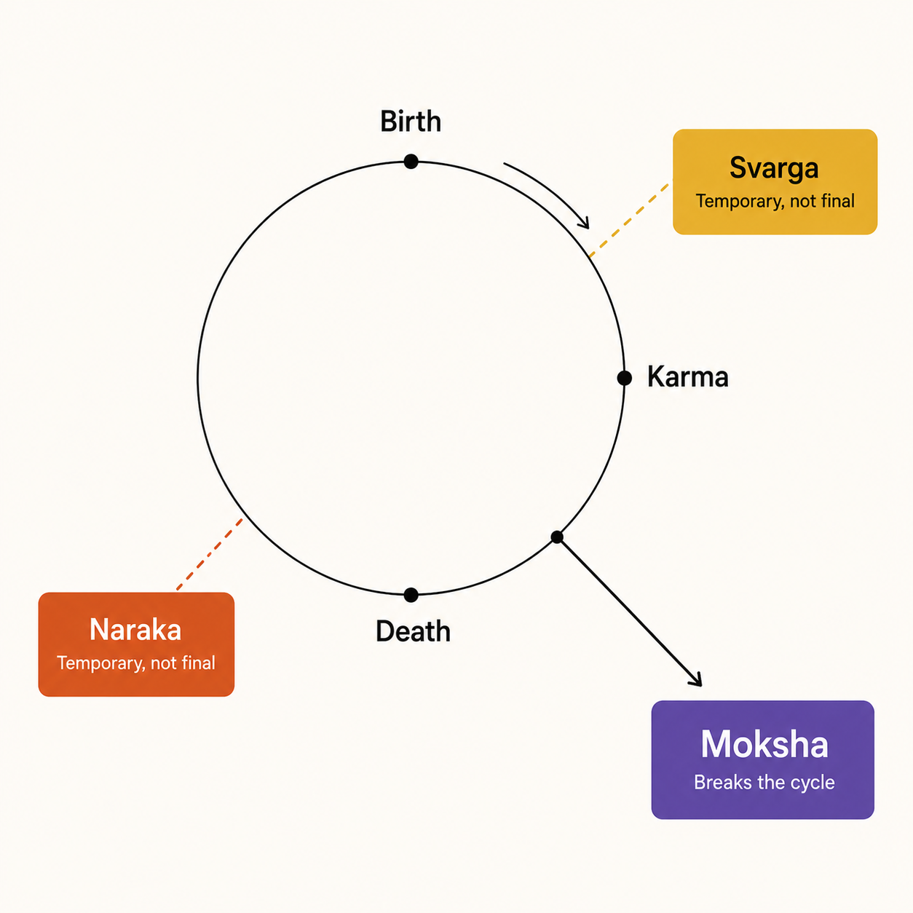
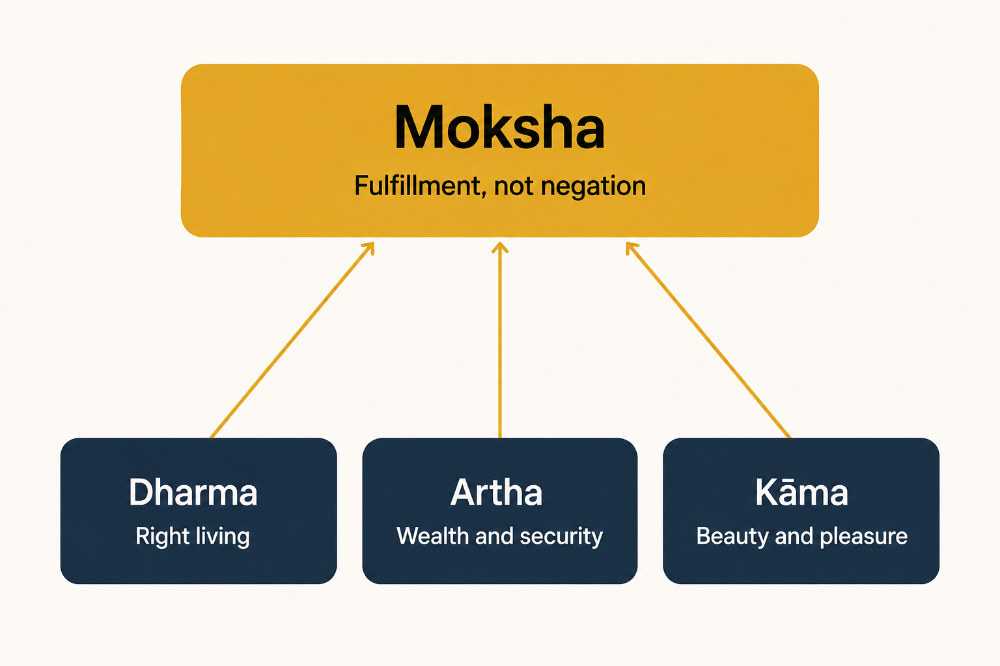

A guide for the intelligent reader raised on a different map of reality — not a comparison, a translation.
Anand Sinha·August 2026·Part I of VI · The Questions·Edition 16
WHAT THIS ARTICLE IS ABOUT
Most people raised in the Abrahamic traditions carry an unconscious checklist into any conversation about religion — one God, one creation, one prophet, one revealed scripture, a final judgment. That checklist produces a predictable set of questions when it turns toward Sanātana Dharma: who is your God, who is your prophet, what is your holy book.
The problem isn't that Sanātana Dharma answers those questions badly. It's that it's answering a different set of questions entirely — starting from ontology and identity (what is reality, who am I, really) rather than history and relationship (what did God reveal, and to whom).
This guide lays out Sanātana Dharma's own vocabulary — Brahman, Ātman, Karma, Saṃsāra, Moksha — on its own terms, before any comparison is attempted at all. Not a comparison. A translation.
Most people raised in the Abrahamic traditions do not consciously realize they are carrying a mental framework into every conversation about God, scripture, and the ultimate nature of things. It is not a flaw. It is simply the only lens available to someone who has never needed another one. That lens comes with a built-in checklist: one God, one creation event, one human life, a prophet or a succession of prophets, one revealed scripture, a final judgment, a heaven or a hell, and salvation through right belief or obedience.
When that lens turns toward Sanātana Dharma, it produces a familiar set of questions. Who is your God? Who is your prophet? What is your holy book? Who founded your tradition? Which heaven do you go to? What happens after judgment? Every one of these is a reasonable question — reasonable, that is, from inside the framework that generated it.
The difficulty is not that Sanātana Dharma has bad answers to these questions. The difficulty is that it is answering an entirely different set of questions.
Where the Abrahamic traditions ask who revealed the truth, Sanātana Dharma asks what the nature of reality is. Where they ask how to reach heaven, it asks who is doing the asking — who am I, really. Where they ask what a person must believe, it asks what is true and how that truth can be directly known. Where they ask what happens after death, it asks the more unsettling question underneath: why there is birth and death at all.
This is a difference of starting point, not merely of doctrine. The Abrahamic traditions begin, broadly, with history — God acted, God revealed, prophets appeared, scripture was given, and history moves toward a final destination. Sanātana Dharma begins with ontology, the study of being itself: what consciousness is, why the universe exists, what the self is, what liberation means. History matters in this framework, but it is not where the inquiry starts.
There is a second, quieter difference beneath the first. Abrahamic traditions generally begin with relationship — Creator and creation, standing apart from one another and addressing each other across that distance. Sanātana Dharma begins with identity. At the deepest level, reality and consciousness are not two separate things, and the true Self is not ultimately separate from that reality. This is expressed in one of the great Upanishadic declarations, Tat Tvam Asi — “That Thou Art,” from the Chāndogya Upanishad. The central question stops being “who is God” and becomes “who am I, really.”
None of this makes one tradition superior to the other. It only means a reader cannot understand Sanātana Dharma by running its concepts through categories built for a different purpose — any more than a person could learn calculus using only the tools of arithmetic. The operations look similar at a glance. They are not doing the same work. What follows is an attempt to lay out Sanātana Dharma’s own vocabulary, on its own terms, before any comparison is attempted at all.
Before any of that vocabulary will make sense, one more assumption needs to be set aside — the assumption that Sanātana Dharma runs on a single timeline at all.
Continue reading: Tap the THREE TIMELINES tab above to see why cosmic time, sacred chronology, and textual history are not the same clock.
Understanding Sanātana Dharma
Three Timelines
Cosmic time, sacred chronology, and textual history are not the same clock.
Anand Sinha·August 2026·Part II of VI · Three Timelines
Before any of the vocabulary in this guide will make sense, one more assumption needs to be set aside. A reader raised on a single timeline — one creation, one history, one sequence of prophets — naturally starts asking when questions from the first paragraph onward. When did this begin? Before or after Moses, before or after Jesus, before or after Muhammad? Were Rāma and Krishna before the Vedas, or after? Until that question has an answer, nothing else in this guide has a place to sit.
The honest answer is that Sanātana Dharma does not run on one timeline. It runs on three, and they are not interchangeable. Cosmic time is the framework of kalpas and yugas, vast cycles of creation and dissolution described as beginningless — not a sequence of datable events, but the container within which all events, however vast, take place. Traditional itihāsa is the sacred chronology the tradition itself preserves: Rāma, then Krishna, then the events of the Mahābhārata, then the beginning of the current age, Kali Yuga. Textual history is a third and different thing again — the order in which the surviving literature was composed and written down, which is what modern historical scholarship is actually in a position to date.
Traditional Hindu understanding regards the philosophy itself as Sanātana — beginningless — while treating the surviving literature that preserves it as belonging to specific periods of history. Those two claims are not in tension, because they are answers to two different questions: one about the nature of the truth being pointed to, the other about when a given text was composed. The table below lays out the second kind of claim — the traditional understanding alongside what modern historical scholarship proposes — without attempting to adjudicate between them.
Traditional Understanding
Modern Historical Scholarship
Sanātana Dharma — beginningless (anādi)
Philosophical tradition preserved through evolving literature
Śrī Rāma — Tretā Yuga (traditionally ~8,000 years ago)
—
Śrī Krishna — end of Dvāpara Yuga (traditionally ~5,000 years ago)
—
Kali Yuga begins — 3102 BCE (traditional reckoning)
—
Vedas — eternal (apauruṣeya), perceived by the Ṛṣis
Earliest surviving Vedic layers: c. 1500–1200 BCE
Principal Upanishads — part of the Vedic revelation
c. 800–300 BCE
Bhagavad Gītā — spoken by Krishna during the Mahābhārata
Composition of surviving text: c. 2nd century BCE – 2nd century CE
Mahābhārata — traditionally at the end of Dvāpara Yuga
Compilation of surviving epic: c. 400 BCE – 400 CE
Purāṇas — preserved and compiled over time
c. 300–1000 CE
Sanātana Dharma distinguishes between timeless philosophical truths, traditional sacred chronology, and the historical dating of surviving literature. Thus, the lives of Śrī Rāma and Śrī Krishna belong to the tradition’s own chronology, while the dates in the right-hand column refer to the composition and compilation of the surviving texts — not necessarily to the events or persons they describe. With that map of time in place, the vocabulary itself can now be laid out clearly.

Illustrative diagram created for The Signal. A visual simplification of the three-timeline distinction described in the text, not a substitute for it.
With cosmic time, sacred chronology, and textual history untangled, the vocabulary itself can be laid out clearly — starting with the word most often mistranslated of all.
Continue reading: Tap the THE MAP tab above to untangle Brahman, Brahmā, Brahmin, and Īśvara.
Understanding Sanātana Dharma
The Map
Four words that sound alike in English and mean nothing alike in Sanskrit.
Anand Sinha·August 2026·Part III of VI · The Map
To understand Sanātana Dharma, set aside one assumption shared by Christianity, Islam, and Judaism: that everything begins with God. Sanātana Dharma begins with Reality.
One of the largest obstacles to understanding Sanātana Dharma is not conceptual but linguistic. Sanskrit terms get flattened into English words — God, soul, heaven, hell — that were built for a different worldview, and the flattening quietly rewrites the meaning underneath. Nowhere is this more consequential than with four words that look and sound almost identical to an English speaker’s ear: Brahman, Brahmā, Brahmin, and Īśvara.
Sanātana Dharma itself is the broadest term of the four to sort out, though it comes first. Sanātana means eternal. Dharma is among the richest words in Sanskrit — depending on context it can mean the cosmic order that sustains existence, moral order, natural law, ethical duty, or the right way of living in harmony with reality, which is part of why it resists being translated the same way twice. Together the phrase means something closer to “the eternal order of reality” than the name of a single founded system with a body of followers. It is not the name of a system someone invented. It is a description of how its adherents understand reality to already operate, independent of anyone’s belief in it.
Brahman is the term that carries the most weight and the most risk of mistranslation. Brahman is not a god in any conventional sense — not a being among beings, not a personality with preferences. It is described as infinite reality, pure consciousness, existence itself, prior to and beyond space, time, gender, form, and personality. A useful, if imperfect, modern analogy: where physics describes quantum fields underlying matter, Brahman is understood as something more fundamental still — not energy, not matter, but the ultimate reality within which both consciousness and the physical universe arise. Everything that exists, exists within Brahman. Nothing exists outside it.
Brahman and Brahmā are not the same word wearing different spellings. One is eternal. The other exists inside time.

Illustrative diagram created for The Signal. A visual simplification of the four terms described in the text, not a substitute for it.
Brahmā, with the long final vowel, is the cosmic creative intelligence traditionally personified as the creator of the manifested universe. He operates within cosmic time rather than standing beyond it, taking up that role at the start of each cosmic cycle, or kalpa. When the cosmic order associated with him reaches its end, the manifested universe dissolves; Brahman, by contrast, is the reality beyond all such cycles.
Brahmin, a third and unrelated word, refers to the traditional social and intellectual class associated with Vedic learning, teaching, ritual, and the preservation of sacred knowledge. Hindu texts also describe the ideal Brahmin through learning, discipline, character, and the pursuit of Brahman, although Brahmin identity became closely connected with inherited social status in historical practice. A Brahmin’s connection to Brahman is aspirational, not definitional: the ideal Brahmin is one who seeks knowledge of Brahman, not one who possesses or embodies it by birth.
One of the oldest lines in the Ṛg Veda states it directly: ekaṃ sat viprā bahudhā vadanti — “Truth is one; the wise call it by many names.” That single line, composed millennia before the theological debates it anticipates, is the reason Vishnu, Shiva, Devi, and other names are not experienced within the tradition as competing, independent gods.
That leaves the closest thing Sanātana Dharma has to the English word “God” in the devotional sense: Īśvara, the Lord. Īśvara means the supreme governing intelligence encountered personally in relation to the universe; Brahman names ultimate reality without limitation, while Īśvara is how that ultimate reality is understood and approached as knowing, ordering, sustaining, and responsive. Different schools of thought within Sanātana Dharma worship this Supreme Lord under different names and forms — Vishnu, Shiva, Devi, and others — different names and forms through which the ultimate is contemplated and worshipped. The multiplicity that looks, from the outside, like polytheism is, from the inside, closer to a set of doorways into a single room.
With the vocabulary in place, the next question is what kind of story these terms are telling — and it is not the one-life, one-judgment story most readers expect.
Continue reading: Tap the THE CYCLE tab above to see why Sanātana Dharma pictures existence as a wheel, not a line.
Understanding Sanātana Dharma
The Cycle
No single life, no single judgment, no eternal reward or eternal punishment.
Anand Sinha·August 2026·Part IV of VI · The Cycle
If the Abrahamic traditions picture existence as a line — one life, one judgment, one eternal outcome — Sanātana Dharma pictures something closer to a wheel. The universe itself is not created once. It expands, evolves, dissolves, and is recreated across cycles measured in billions of years, with no absolute starting point to creation and no single Year One from which everything else is dated.
The individual self within this picture is called Ātman, and several of the principal Upanishads lead toward the recognition that the deepest Self, Ātman, is not separate from Brahman, the ultimate reality. Life’s central task, in this framework, is not to earn a place in the next world but to realize a truth about this one: that the seeker and the sought are not, in the end, two separate things.
Karma is not divine punishment handed down from outside. It is closer to a law built into the structure of reality itself.
Karma, literally “action,” describes the principle that every thought, word, and deed carries consequences that shape future experience — not as an arbitrary judgment imposed by an external authority, but as something closer to a moral law woven into the fabric of existence, the way gravity is woven into the physical world. Those consequences are not confined to a single lifetime. The embodied individual, or jīva, is understood to undergo repeated births and deaths, a continuous cycle called saṃsāra, with each lifetime offering fresh opportunity for learning and growth rather than a single, final exam.

Illustrative diagram created for The Signal. A visual simplification of the cycle described in the text, not a substitute for it.
This has direct consequences for how Sanātana Dharma treats heaven and hell, and it is here that translation does the most damage. Swarga is often rendered as “Heaven,” but the translation is incomplete: Swarga is a higher realm where beings experience the results of accumulated good karma, and it is not eternal — once those merits are exhausted, the jīva returns to earthly existence rather than remaining permanently. Naraka is often rendered as “Hell,” and the same caveat applies. It is a realm where the consequences of harmful action are experienced, but like Swarga it is temporary, and the jīva continues its journey afterward. In the mainstream Hindu cosmological framework, Naraka is not an eternal damnation from which no further journey is possible; Swarga and Naraka are both conditions within saṃsāra, not the final destination of the Self. A third term, Pātāla, is sometimes mistranslated as Hell as well, but it refers instead to a set of lower realms populated by various beings, including Nāgas and Asuras in many traditional accounts — a feature of Hindu cosmology, not a place of punishment at all.
The end point of this entire cycle is Moksha: liberation from the wheel of birth and death altogether. Moksha is not simply an admission ticket to a better realm. It is the direct awakening to one’s true nature as inseparable from Brahman — the realization that the question “who am I” and the question “what is ultimate reality” were, from the beginning, the same question asked two different ways.
If the cycle is real, an obvious question follows: what is any of it for? Two more terms answer that question directly.
Continue reading: Tap the THE AIM tab above for Avatāra, Rishi, and the four puruṣārthas.
Understanding Sanātana Dharma
The Aim
What a divine descent, a seer, and a well-lived life have in common.
Anand Sinha·August 2026·Part V of VI · The Aim
Two more terms round out this vocabulary, and both mark real departures from Abrahamic categories rather than mere synonyms wearing different names. The first is Avatāra. An Avatāra is not a prophet, not a messenger, and not a person specially inspired by the divine from a distance. A prophet conveys divine revelation; an Avatāra is understood as a descent of the Divine itself into embodied existence — Rāma and Krishna being the most widely recognized examples — with the central purpose of restoring dharma when it has seriously declined. The structural difference from prophecy is not subtle.
The second is the Rishi, often translated loosely as “sage” but functioning quite differently from a prophet in the technical sense. A Rishi is not considered the author or inventor of scripture. The tradition holds that a Rishi directly perceives eternal truths that already exist, independent of any particular moment in history, and transmits what has been perceived rather than what has been personally revealed to him alone. This is part of why the Vedas are traditionally described as apauruṣeya — not authored by any human being — a category that has no real equivalent in traditions where scripture is understood as revealed by God to a specific prophet at a specific point in time.
Sanātana Dharma does not ask a person to choose between wealth, pleasure, ethics, and liberation. It asks them to hold all four, in the right order.

Illustrative diagram created for The Signal. A visual simplification of the four puruṣārthas described in the text, not a substitute for it.
That ordering is formalized in the four puruṣārthas, the traditional goals of a human life. Dharma is living ethically and in harmony with the order underlying existence. Artha is the pursuit of wealth, security, and the material means to live responsibly. Kāma is the enjoyment of love, beauty, relationship, and the legitimate pleasures available to an embodied life. Moksha, liberation, sits above the other three as the highest aim, but critically, it does not cancel them. Unlike frameworks that treat worldly success and spiritual salvation as competing tracks, Sanātana Dharma treats the first three as legitimate goods in their own right, with the fourth as their fulfillment rather than their negation.
Taken together, these terms are not a competing theology asking to be ranked against another one. They are a different grammar, built to answer a different opening question. A reader who arrives expecting a single God, a single prophet, a single book, and a single judgment will, understandably, come away confused — not because Sanātana Dharma has failed to answer the question, but because it was never trying to answer that particular one.
One question remains, and it is the question a careful reader should be asking by now: where did any of this come from, and how was it kept intact across thousands of years without a single founder, a single revelation event, or a single book to anchor it? That is where the vocabulary in this guide originated — not in doctrine handed down at one moment in history, but in a body of texts and a mode of inquiry that developed, and kept developing, across a very long span of time.
Where did any of this come from, and how was it kept intact for thousands of years without a single founder, revelation event, or book to anchor it?
Continue reading: Tap the THE SOURCE tab above to see the texts and history behind everything covered so far.
Understanding Sanātana Dharma
The Source
Where these ideas came from, how they were written down, and how the tradition kept growing.
Anand Sinha·August 2026·Part VI of VI · The Source
Brahman was described earlier as pure consciousness — but it is worth pausing on what that word is and is not doing. This is not consciousness in the everyday sense of brain activity, alertness, or awareness of one’s surroundings, all of which come and go and belong to a particular body. It is closer to the substrate that makes any experience possible at all — often described in the tradition through the compound sat-chit-ānanda, existence, consciousness, and bliss, understood not as three separate qualities Brahman happens to have but as three faces of a single, undivided reality. A modern reader can hold this loosely: not “Brahman is conscious” in the way a person is conscious, but “consciousness itself, wherever it appears, is Brahman showing up as experience.”
That claim did not arrive by argument alone. It arrived through a specific body of literature, and understanding that literature is essential to understanding how Sanātana Dharma differs from traditions built around a single revealed book. The foundational texts are the four Vedas — Ṛg, Yajur, Sāma, and Atharva — transmitted orally for a very long period before being written down, and traditionally regarded as apauruṣeya, without human author. Each Veda developed through several interconnected layers: the Saṃhitās, containing hymns and formulas; the Brāhmaṇas, explaining ritual; the Āraṇyakas, moving toward contemplation; and the Upanishads, examining the nature of reality, consciousness, and the Self. Later tradition broadly described the ritual orientation as karma-kāṇḍa and the knowledge-oriented culmination as jñāna-kāṇḍa — a word, Upanishad, that literally suggests sitting down close to a teacher, and a body of texts also known as Vedānta: literally, the end of the Veda, both in the sense of coming last and in the sense of representing its culmination.
The Upanishads are where the vocabulary in this guide is actually anchored. More than two hundred texts have at various times circulated under the name Upanishad, while the traditional Muktikā canon lists 108; a much smaller group of principal Upanishads — commented on for centuries by every major school of Hindu philosophy — forms the philosophical foundation most extensively studied. It is here that the great declarations, the mahāvākyas, appear: Tat Tvam Asi, “That Thou Art,” Ayam Ātmā Brahma, “This Self is Brahman,” and Prajñānam Brahma, “Consciousness is Brahman.” These are not devotional slogans. They are the conclusions of sustained philosophical dialogue, often framed as a teacher walking a student from a plausible but incomplete answer toward a more precise one.
Sanātana Dharma preserved different kinds of knowledge through different kinds of literature. The Vedic hymns preserve invocations, cosmological reflections, and ritual knowledge; the Upanishads pursue the nature of reality and the Self through sustained inquiry; the Rāmāyaṇa and Mahābhārata embody dharma in human choices, relationships, conflict, and consequence; and the Purāṇas communicate cosmology, genealogy, sacred geography, devotion, and ethical memory through narrative. The tradition therefore grew not by discarding one layer for another, but by preserving different modes of knowing — recitation, ritual, contemplation, reasoning, dialogue, story, and lived practice.
A Note on Scope
This guide focuses on the philosophical foundations of Sanātana Dharma found in the Upanishads and related Vedic literature. It is an introduction to one foundational stream of that civilizational inheritance, not a survey of every school of thought or path of practice that later developed from it — Sāṅkhya, Yoga, Nyāya, Mīmāṃsā, Tantra, and the many Bhakti traditions each deserve, and have received elsewhere, their own extended treatment.
Understood this way, the reader who began this guide asking “who is your God, who is your prophet, and what is your holy book” is ready for a deeper question: what does a civilization come to understand when generation after generation preserves, tests, contemplates, debates, and lives the same enduring inquiry — what is real, who am I, what is consciousness, what binds a being to repeated existence, and what sets it free.
Stay Connected to The Signal
Subscribe for new editions, send feedback on this piece, or rate what you just read.
A Note from the Author
I did not grow up needing the vocabulary in this guide explained to me, which is exactly why writing it took longer than almost anything else I have published here. Translating a worldview without flattening it into someone else’s categories is slow, deliberate work, and I am certain this is not the last word I will write on the subject.
I am actively engaged with
Americans for Hindus (A4H),
working to awaken Hindu Americans to the urgency of civic participation and
political representation. The stakes are not abstract.
Every community faces the same fundamental choice:
“Be at the table — or be on the menu.”
If this article gave you something to think about,
the other editions are written in the same spirit.
I hope you find them worth your time.
Anand Sinha spent decades in corporate life before retiring to
focus on the questions that had always mattered most to him — civilization, identity,
history, and the political future of Hindu Americans. Based in Metro Detroit, he writes
The Signal, an independent publication covering geopolitics, finance,
technology, elections, and civilizational history for the educated reader who wants more
than the mainstream narrative offers.
He is actively engaged with Americans for Hindus (A4H),
a Political Action Committee dedicated to awakening Hindu Americans to the importance of
civic participation and political representation. He conceived, researched, and built
entirely on his own the A4H Elections Hub 2026 — a fifty-state voter
guide and candidate tracking system designed to give Hindu Americans a seat at the table
in American political life.
He also coordinates neighborhood civic services for his community
in Troy, Michigan, and publishes his writing, tools, and civic technology projects online.